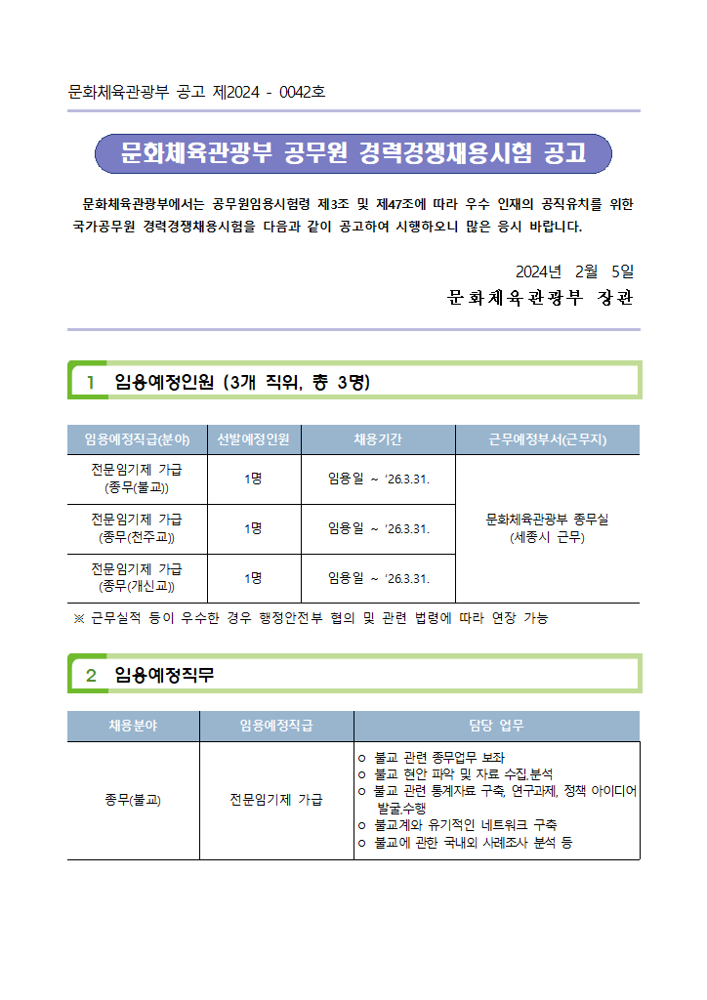

hwp2md가 추출한 표
자동 변환 결과 중 임용예정인원 표 발췌
| 임용예정직급(분야) | 선발예정인원 | 근무예정부서(근무지) |
|---|---|---|
| 전문임기제 가급 (종무(불교)) | 1명 | 문화체육관광부 종무실 (세종시 근무) |
| 전문임기제 가급 (종무(천주교)) | 1명 | 〃 |
| 전문임기제 가급 (종무(개신교)) | 1명 | 〃 |
화면에는 일부 열만 표시했습니다. 전체 변환 파일은 비교 페이지에서 확인하세요.
한글 문서가 Markdown으로 바뀌어도
표 제목과 번호, 병합의 의미는 확인해야 합니다.
AI Doc Ready가 검토할 위치와 근거를 알려드립니다.
Node.js 20 이상 · MIT 오픈소스 · 로컬 검사

이 문서를 실제로 변환·검사했습니다.hwp2md의 실제 공무원 채용 공고 샘플로 확인했습니다. 변환된 텍스트는 검사할 수 있습니다. 이제 무엇을 사람이 살펴봐야 하는지도 보입니다.
전체 결과: Warning {{CASE_WARNINGS}}개. 서식용 표와 HTML 미지원 안내가 포함됩니다. 진단 수가 문서 품질이나 개선율을 뜻하지는 않습니다.
원본·전체 Markdown·검사 결과 비교보고서를 쓰는 일은 사람과 에이전트가 맡습니다. AI Doc Ready는 재현 가능한 정적 검사 결과를 제공해 작성과 검토를 연결합니다.
표·그림 제목, 순서 표시, 항목 단계, 중첩 표와 병합 검토 후보를 확인합니다. 원본 문서를 수정하지 않습니다.
원문 발췌, 규칙 ID, 문서 위치를 함께 제공합니다. 미지원 구조와 사람이 검토할 항목도 구분합니다.
Markdown과 HWPX, 여러 파일과 디렉터리, JSON 출력과 사용자 프로파일을 지원합니다. Codex·Claude Code·pi에서 활용할 수 있습니다.
SKILL.md와 상시 지침 템플릿을 사용해 에이전트가 초안 작성 후 lint 결과와 원문을 비교하도록 안내합니다.
행정안전부의 AI 친화적 보고서 전면 도입을 계기로, 작성 원칙을 실제 문서에서 점검할 수 있는 도구를 만들었습니다.
공식 원칙에 근거한 규칙과 프로젝트의 자체 보완 규칙을 구분합니다. 한국 문서 파싱에는 Kordoc 라이브러리를 사용합니다.